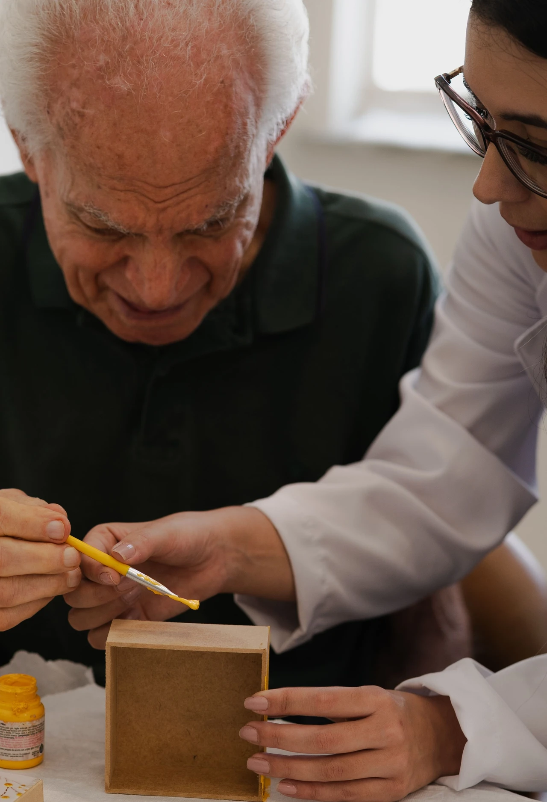

Our services
What would make your day easier?
Every home is different. Explore the kinds of help we can discuss, then tell us about your household.

Nannies
Care for your family’s routine.
Someone to help care for your children and support your family’s daily routine.
We discuss the children’s ages, daily routine, school arrangements, hours and meals. We also ask about language needs and any other duties you would like included.
- Children’s ages and routines
- School arrangements and meals
- Working hours and responsibilities

Domestic support
A hand with everyday tasks.
Help with cleaning and everyday household tasks, around the hours and duties you agree.
Tell us about cleaning, meals, pets, groceries or errands you need help with. We can then discuss the hours and responsibilities of the role.
- Cleaning and everyday tasks
- Meals, pets and errands
- Agreed hours and duties

Night Nurses
Support through the night.
Help during the night, with the hours and household responsibilities discussed with you.
We discuss working times, household duties and any First Aid training you require. Sensitive health information can be discussed privately later, rather than shared in the public form.
- Overnight working arrangements
- Household support requirements
- Relevant training to discuss

Housekeepers
A home that runs more smoothly.
Help keeping your home clean, organised and running smoothly.
We talk through cleaning, organisation, meal preparation and any other household duties, so expectations are clear from the start.
- Cleaning and organisation
- Meal preparation and routines
- Clear expectations from the start
A conversation is a good place to start